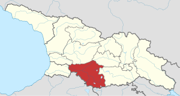

მესხეთი ისტორიული სამხრეთ-დასავლეთ საქართველოს (ზემო ქართლი) ზოგადი სახელწოდებაა. ანტიკური წყაროებში (სტრაბონი, ძვ. წ. 64/63 — ახ. წ. 23/24) მოიხსენიება ეს ტერიტორია “მოსხიკეს” სახელწოდებით. (მოსხური ქვეყანა, მესხების მხარე) ეწოდებოდა. აღსანიშნავია, რომ ძველი ქართული წყაროები “მესხეთს” არ ახსენებენ და ამ მხარის სახელწოდებად X-XVI სს-ში ზემო ქართლი იხმარებოდა. მის პარალელურად არსებობდა ტერმინები შიდა ქართლი და ქვემო ქართლი. ზემო ქართლი მოიცავდა მტკვრის აუზის ზემო ნაწილს (სამცხე, ჯავახეთი, არტაანი, ერუშეთი, კოლა) და ჭოროხის აუზს მთლიანად (აჭარა, კლარჯეთი, შავშეთი, ტაო, სპერი). იგი სამხრეთიდან მდინარეების ევფრატისა და არაქსისაგან იფარგლებოდა ე. წ. მოსხური მთებით.

ამ ტერიტორიაზე უძველესი დროიდან სახლობდნენ ქართველები — მესხები. აქედან მოდის მხარის სახელწოდებაც. საუკუნეთა განმავლობაში მესხეთის ტერიტორიაზე სხვადასხვა ადმინისტრაციული და პოლიტიკური ერთეულები არსებობდა: დიაოხი, ზაბახა, ვიტეროხი (ტომთა გაერთიანებები), კლარჯეთის, წუნდის და ოძრხის საერისთავოები, ქართველთა სამეფო ანუ ტაო-კლარჯეთის სამთავრო, სამცხე-საათაბაგო, ახალციხის საფაშო.
ძვ. წ. II-I საუკუნეებში მესხეთის ტერიტორია 3 ნაწილად იყოფოდა; სომხეთს ეკავა — ტაო, სპერი და კოლა; კოლხეთს — შავშეთი, კლარჯეთი და აჭარა; ქართლს (იბერია) — არტაანი, კავახეთი და სამცხე. უფრო გვიან იბერიამ კვლავ შემოიერთა დანარჩენი მესხეთი გარდა სპერისა.